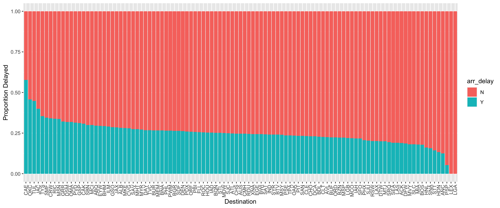

Performance with Big Data
performance.RmdIf your healthcareai models are running out of memory or are very slow, you might be thinking that something is wrong with the package or that you need a bigger computer. While that can be frustrating, there are several tricks that you can use to speed things up and save memory. Read on to see some options for using healthcareai with a large data set.
TL;DR
If you have a dataset with more than 20k rows or 50 columns, you might run into performance issues. The size of your data and the type of model training you use influence how long it will take. Some easy steps to reduce training time:
- Limit the number of columns in your data after
prep_data. - Categorical variables with many unique values (like zip code) create many columns. Use
get_best_levelsorprep_data’scollapse_rare_factorsto limit them. -
prep_datatransforms date columns into many columns by default. Useconvert_dates = FALSEto prevent that. - Limit the length of your data to more recent data or to a subset of the original data.
- Use
flash_modelsinstead ofmachine_learnto train fewer models during development work. - GLM is typically faster than RF, though doesn’t always perform as well.
- Use
machine_learnortune_modelswith faster settings. Pick 1 model, and use a tune depth of 5.
Expectations
The plot below provides a rough idea of how long you can expect model training to take for various sizes of datasets, models, and tuning settings. The largest dataset there, approximately 200k rows x 100 columns, requires about 30 minutes to train all three models if tuning isn’t performed, and about six hours to tune all three models.
In general, glm tunes very efficiently; however due to its linear constraints, it may not always provide a performant model. xgb is fast if tuning isn’t performed, but it is a complex model for which tuning can be both important and computationally intensive. When you decide to use xgb, we recommend a final round of model tuning with tune_depth turned up at least several times higher than the default value of 10. Tuning time will increase linearly with tune_depth, so you can expect turning it up from 10 to 30 to approximately triple model training time. Both xgb and rf can be quite expensive to tune; this is a result of healthcare.ai exploring some computationally expensive regions in their hyperparameter space. It may be more efficient to examine the results of an initial random search with plot(models), and then tune over the most-promising region in hyperparameter space by passing a hyperparameters data frame to tune_models. You can see how the default hyperparameter search spaces are defined in healthcareai:::get_random_hyperparameters.
If you want to squeeze every ounce of performance from one of these models; we suggest iteratively zeroing in on the region in hyperparameter space that optimizes performance.

model training time
Data
If you are running out of memory, it’s probably because your data is too large for the operations that you’ve asked R to do.
In general, machine learning can ignore useless columns. But with large data sets, it’s better to use fewer columns that are more predictive to save computational cost. Remember, machine learning should be iterative. Add columns and see if they help, remove them and see if it hurts, try different transformations.
This document walks through some steps to help you build a better model in less time.
Start by loading up the flights dataset.
library(tidyverse)
# > ── Attaching packages ────────────────────────────────────────────── tidyverse 1.2.1 ──
# > ✔ ggplot2 2.2.1.9000 ✔ purrr 0.2.5
# > ✔ tibble 1.4.2 ✔ dplyr 0.7.5
# > ✔ tidyr 0.8.1 ✔ stringr 1.3.1
# > ✔ readr 1.1.1 ✔ forcats 0.3.0
# > ── Conflicts ───────────────────────────────────────────────── tidyverse_conflicts() ──
# > ✖ dplyr::filter() masks stats::filter()
# > ✖ dplyr::lag() masks stats::lag()
library(nycflights13)
library(healthcareai)
# > healthcareai version 2.1.0
# > Please visit https://docs.healthcare.ai for full documentation and vignettes. Join the community at https://healthcare-ai.slack.com
d <- nycflights13::flights
d
# > # A tibble: 336,776 x 19
# > year month day dep_time sched_dep_time dep_delay arr_time
# > <int> <int> <int> <int> <int> <dbl> <int>
# > 1 2013 1 1 517 515 2 830
# > 2 2013 1 1 533 529 4 850
# > 3 2013 1 1 542 540 2 923
# > 4 2013 1 1 544 545 -1 1004
# > 5 2013 1 1 554 600 -6 812
# > # ... with 3.368e+05 more rows, and 12 more variables:
# > # sched_arr_time <int>, arr_delay <dbl>, carrier <chr>, flight <int>,
# > # tailnum <chr>, origin <chr>, dest <chr>, air_time <dbl>,
# > # distance <dbl>, hour <dbl>, minute <dbl>, time_hour <dttm>You can get the size of a dataset with dim, nrow, ncol and object_size. 40.6 MB really doesn’t seem like that much. Your computer probably has at least 8 GB of RAM. But you are going to prepare that data for machine learning and then train several models to see which one fits the data best. Larger data sets take more memory and time to process. Despite its small size, if you were to train a model on this data, it would take a long time.
os <- object.size(d)
print(paste("Data is", round(as.numeric(os)/1000000, 1), "mb."))
# > [1] "Data is 40.7 mb."Data Set Sizes
In general, 336k rows and 19 columns is large but should be workable. Keep in mind that the data changes as you manipulate it though. For example, if we prep_data, the size of the data changes. This is because prep_data transforms, adds, and removes columns to prepare your data for machine learning. It will only modify columns, never rows.
Prepping this data increased the number of columns from 19 to 155. The size went up an order of magnitude, to 408 MB. The categorical columns, those made up of characters or factors, are the reason for the extra columns, and thus, the size change. The amount of memory your data takes up is proportional to the number of cells in the table, rows times columns.
R works with data “in-memory.” When the size of data loaded in the session exceeds available memory, it starts using harddisk for memory, which is about an order of magnitude slower. Check out the Grid View of the Environment tab in Rstudio. You can sort by object size to see if you’re lugging around a bunch of big items and what’s taking up space. You can remove items from the active environment (this doesn’t touch anything on disk, but you’ll have to re-load/create it to get it back in R) with rm(object_name). More detail on memory usage can be found in Hadley’s book, “Advanced R.”
library(healthcareai)
d <- d %>%
mutate(arr_delay = case_when(arr_delay > 15 ~ "Y",
TRUE ~ "N"),
flight_id = 1:nrow(d)) %>%
select(-dep_time, -arr_time, -dep_delay, hour, minute)
d_clean <- d %>%
prep_data(outcome = arr_delay,
... = tailnum,
collapse_rare_factors = FALSE,
add_levels = FALSE)
# > Warning in prep_data(., outcome = arr_delay, ... = tailnum,
# > collapse_rare_factors = FALSE, : These ignored variables have
# > missingness: ...
# > Training new data prep recipe...
# > Removing the following 1 near-zero variance column(s). If you don't want to remove them, call prep_data with remove_near_zero_variance as a smaller numeric or FALSE.
# > year
dim(d_clean)
os <- object.size(d_clean)
print(paste("Prepped data is", round(as.numeric(os)/1000000, 1), "mb."))
# > [1] 336776 156
# > [1] "Prepped data is 411.7 mb."Categorical Variables
Categorical columns must be multiplied into dummy columns for machine learning. For example, carrier has 16 unique values and those will be turned into 16 unique columns. These dummy columns are made up of 1s and 0s. There is one dummy column for each unique value in the original column except one. The missing value can be inferred from a 0 in the rest of the columns. For example, if your gender column contained Male and Female, you would get 1 dummy column, Gender_Male, where males were 1. Females would then be the 0’s. If you wanted that dummy column to instead be Gender_Female, you can use the prep data argument, ref_data, like this: ref_levels = c(gender = "Female"). prep_data then adds a column to collect missing values in the original column.
Be careful with categorical columns, as they can blow up your data set. If you had a column of DRG codes (or tailnums, which was removed above) with 100s of unique values, your data would become hundreds of columns!
print(paste("Carrier has", unique(d$carrier) %>% length(), "unique values."))
d_clean %>%
select(starts_with("carrier"))
# > healthcareai-prepped data. Recipe used to prepare data:
# > Current data:
# > [1] "Carrier has 16 unique values."
# > Data Recipe
# >
# > Inputs:
# >
# > role #variables
# > outcome 1
# > predictor 15
# >
# > Training data contained 336776 data points and 9430 incomplete rows.
# >
# > Operations:
# >
# > Sparse, unbalanced variable filter removed year [trained]
# > Date features from time_hour [trained]
# > Variables removed time_hour [trained]
# > Mean Imputation for month, day, sched_dep_time, ... [trained]
# > Filling NA with missing for carrier, origin, dest, ... [trained]
# > Dummy variables from carrier, origin, dest, ... [trained]
# > # A tibble: 336,776 x 16
# > carrier_AA carrier_AS carrier_B6 carrier_DL carrier_EV carrier_F9
# > <dbl> <dbl> <dbl> <dbl> <dbl> <dbl>
# > 1 0 0 0 0 0 0
# > 2 0 0 0 0 0 0
# > 3 1 0 0 0 0 0
# > 4 0 0 1 0 0 0
# > 5 0 0 0 1 0 0
# > # ... with 3.368e+05 more rows, and 10 more variables: carrier_FL <dbl>,
# > # carrier_HA <dbl>, carrier_MQ <dbl>, carrier_OO <dbl>,
# > # carrier_UA <dbl>, carrier_US <dbl>, carrier_VX <dbl>,
# > # carrier_WN <dbl>, carrier_YV <dbl>, carrier_missing <dbl>Limiting Width
One of the best ways to reduce training time and memory requirements is to limit the number of columns in the data. Here are some easy ways to do it.
Understand High Cardinality Variables
Since character variables with lots of unique values, or high cardinality variables, cause very wide datasets, the best way to limit width is understanding which columns those are and whether or not you need them in your data. How many unique values are in a character column, like destination?
d %>%
summarize_if(~ is.character(.x) | is.factor(.x) , n_distinct)
# > # A tibble: 1 x 5
# > arr_delay carrier tailnum origin dest
# > <int> <int> <int> <int> <int>
# > 1 2 16 4044 3 105What about how those values correlate with the outcome? In this case, we’ll do a visualization of destination, looking at the proportion of each that belongs to the delayed group.
d %>%
ggplot(aes(x = reorder(dest, arr_delay, function(x) -sum(x == "Y") / length(x)),
fill = arr_delay)) +
geom_bar(stat = "count", position = "fill") +
theme(axis.text.x = element_text(angle = 90, hjust = 1, vjust = .5)) +
xlab("Destination") +
ylab("Proporition Delayed")
But really, you want to know what the distribution of all your variables looks like. You should profile your data using the DataExplorer package. It gives you all sorts of good info about your data and generates an HTML report that you can refer back to later to know if your data might have changed. Check out an example here.
Remove or Transform Columns
The simplest option is to remove categorical or date columns with more than say, 50 categories. You might throw out some information, but you can always add it back in later if you need. You’ll notice that’s what I did above by ignoring tailnum, which has 4000 categories and doesn’t likely contain much useful information.
We saw in the plot that destination, definitely has useful information as some destinations are rarely delayed while others are routinely delayed. 105 categories is simply too many to just include it though. Here, the collapse_rare_factors argument to prep_data can help with that lumping some of the rare categories into an “other” category. This example puts any category that contains less than 2% of the total data into “other.” destination is shrunk to the 16 most common destinations.
d_clean2 <- d %>%
mutate(hour_of_day = lubridate::hour(time_hour)) %>%
prep_data(outcome = arr_delay,
... = tailnum,
collapse_rare_factors = 0.02)
# > Warning in prep_data(., outcome = arr_delay, ... = tailnum,
# > collapse_rare_factors = 0.02): These ignored variables have
# > missingness: ...
# > Training new data prep recipe...
# > Removing the following 1 near-zero variance column(s). If you don't want to remove them, call prep_data with remove_near_zero_variance as a smaller numeric or FALSE.
# > year
d_clean2 %>%
select(starts_with("dest"))
# > healthcareai-prepped data. Recipe used to prepare data:
# > Current data:
# > Data Recipe
# >
# > Inputs:
# >
# > role #variables
# > outcome 1
# > predictor 16
# >
# > Training data contained 336776 data points and 9430 incomplete rows.
# >
# > Operations:
# >
# > Sparse, unbalanced variable filter removed year [trained]
# > Date features from time_hour [trained]
# > Variables removed time_hour [trained]
# > Mean Imputation for month, day, sched_dep_time, ... [trained]
# > Filling NA with missing for carrier, origin, dest, ... [trained]
# > Adding levels to: other, missing [trained]
# > Collapsing factor levels for carrier, origin, dest, ... [trained]
# > Adding levels to: other, missing [trained]
# > Dummy variables from carrier, origin, dest, ... [trained]
# > # A tibble: 336,776 x 18
# > dest_BOS dest_CLT dest_DCA dest_DEN dest_DFW dest_DTW dest_FLL dest_IAH
# > <dbl> <dbl> <dbl> <dbl> <dbl> <dbl> <dbl> <dbl>
# > 1 0 0 0 0 0 0 0 1
# > 2 0 0 0 0 0 0 0 1
# > 3 0 0 0 0 0 0 0 0
# > 4 0 0 0 0 0 0 0 0
# > 5 0 0 0 0 0 0 0 0
# > # ... with 3.368e+05 more rows, and 10 more variables: dest_LAX <dbl>,
# > # dest_MCO <dbl>, dest_MIA <dbl>, dest_MSP <dbl>, dest_ORD <dbl>,
# > # dest_RDU <dbl>, dest_SFO <dbl>, dest_TPA <dbl>, dest_other <dbl>,
# > # dest_missing <dbl>By default, prep_data will also transform dates into categorical columns that make the dataset larger. That can be good, as there planes might tend to be more often delayed in snowy January than cool October. Categorical months are technically more correct than numeric months as January (1) is not less than February (2). Similarly, an hour_of_day column could be a categorical column or a numeric. Categorical columns will create a larger dataset but will perform better using GLM. It’s fine to leave these as numeric for tree-based methods like random forest or xgboost.
Using categorical dates, needed for GLM, we get 81 columns. That might be slow.
library(lubridate)
# >
# > Attaching package: 'lubridate'
# > The following object is masked from 'package:base':
# >
# > date
d_clean2 <- d %>%
mutate(hour_of_day = as.character(hour(time_hour))) %>%
prep_data(outcome = arr_delay,
... = tailnum,
collapse_rare_factors = 0.02,
convert_dates = c("dow", "month"))
# > Warning in prep_data(., outcome = arr_delay, ... = tailnum,
# > collapse_rare_factors = 0.02, : These ignored variables have
# > missingness: ...
# > Training new data prep recipe...
# > Removing the following 1 near-zero variance column(s). If you don't want to remove them, call prep_data with remove_near_zero_variance as a smaller numeric or FALSE.
# > year
d_clean2
# > healthcareai-prepped data. Recipe used to prepare data:
# > Current data:
# > Data Recipe
# >
# > Inputs:
# >
# > role #variables
# > outcome 1
# > predictor 16
# >
# > Training data contained 336776 data points and 9430 incomplete rows.
# >
# > Operations:
# >
# > Sparse, unbalanced variable filter removed year [trained]
# > Date features from time_hour [trained]
# > Variables removed time_hour [trained]
# > Mean Imputation for month, day, sched_dep_time, ... [trained]
# > Filling NA with missing for carrier, origin, dest, ... [trained]
# > Adding levels to: other, missing [trained]
# > Collapsing factor levels for carrier, origin, dest, ... [trained]
# > Adding levels to: other, missing [trained]
# > Dummy variables from carrier, origin, dest, hour_of_day, ... [trained]
# > # A tibble: 336,776 x 82
# > ... month day sched_dep_time sched_arr_time arr_delay flight
# > <chr> <int> <int> <int> <int> <fct> <int>
# > 1 N14228 1 1 515 819 N 1545
# > 2 N24211 1 1 529 830 Y 1714
# > 3 N619AA 1 1 540 850 Y 1141
# > 4 N804JB 1 1 545 1022 N 725
# > 5 N668DN 1 1 600 837 N 461
# > # ... with 3.368e+05 more rows, and 75 more variables: air_time <dbl>,
# > # distance <dbl>, hour <dbl>, minute <dbl>, flight_id <int>,
# > # carrier_AA <dbl>, carrier_B6 <dbl>, carrier_DL <dbl>,
# > # carrier_EV <dbl>, carrier_MQ <dbl>, carrier_UA <dbl>,
# > # carrier_US <dbl>, carrier_WN <dbl>, carrier_other <dbl>,
# > # carrier_missing <dbl>, origin_JFK <dbl>, origin_LGA <dbl>,
# > # origin_other <dbl>, origin_missing <dbl>, dest_BOS <dbl>,
# > # dest_CLT <dbl>, dest_DCA <dbl>, dest_DEN <dbl>, dest_DFW <dbl>,
# > # dest_DTW <dbl>, dest_FLL <dbl>, dest_IAH <dbl>, dest_LAX <dbl>,
# > # dest_MCO <dbl>, dest_MIA <dbl>, dest_MSP <dbl>, dest_ORD <dbl>,
# > # dest_RDU <dbl>, dest_SFO <dbl>, dest_TPA <dbl>, dest_other <dbl>,
# > # dest_missing <dbl>, hour_of_day_X11 <dbl>, hour_of_day_X12 <dbl>,
# > # hour_of_day_X13 <dbl>, hour_of_day_X14 <dbl>, hour_of_day_X15 <dbl>,
# > # hour_of_day_X16 <dbl>, hour_of_day_X17 <dbl>, hour_of_day_X18 <dbl>,
# > # hour_of_day_X19 <dbl>, hour_of_day_X20 <dbl>, hour_of_day_X21 <dbl>,
# > # hour_of_day_X6 <dbl>, hour_of_day_X7 <dbl>, hour_of_day_X8 <dbl>,
# > # hour_of_day_X9 <dbl>, hour_of_day_other <dbl>,
# > # hour_of_day_missing <dbl>, time_hour_dow_Mon <dbl>,
# > # time_hour_dow_Tue <dbl>, time_hour_dow_Wed <dbl>,
# > # time_hour_dow_Thu <dbl>, time_hour_dow_Fri <dbl>,
# > # time_hour_dow_Sat <dbl>, time_hour_dow_other <dbl>,
# > # time_hour_dow_missing <dbl>, time_hour_month_Feb <dbl>,
# > # time_hour_month_Mar <dbl>, time_hour_month_Apr <dbl>,
# > # time_hour_month_May <dbl>, time_hour_month_Jun <dbl>,
# > # time_hour_month_Jul <dbl>, time_hour_month_Aug <dbl>,
# > # time_hour_month_Sep <dbl>, time_hour_month_Oct <dbl>,
# > # time_hour_month_Nov <dbl>, time_hour_month_Dec <dbl>,
# > # time_hour_month_other <dbl>, time_hour_month_missing <dbl>If we want numeric dates, fine for RF or XGB, we’ll have to create them ourselves. With numeric dates, 46 columns remain.
d_clean2 <- d %>%
mutate(hour_of_day = hour(time_hour),
month_of_year = month(time_hour),
day_of_week = wday(time_hour)) %>%
select(-time_hour) %>%
prep_data(outcome = arr_delay,
... = tailnum,
collapse_rare_factors = 0.02,
convert_dates = FALSE)
# > Warning in prep_data(., outcome = arr_delay, ... = tailnum,
# > collapse_rare_factors = 0.02, : These ignored variables have
# > missingness: ...
# > Training new data prep recipe...
# > Removing the following 1 near-zero variance column(s). If you don't want to remove them, call prep_data with remove_near_zero_variance as a smaller numeric or FALSE.
# > year
d_clean2
# > healthcareai-prepped data. Recipe used to prepare data:
# > Current data:
# > Data Recipe
# >
# > Inputs:
# >
# > role #variables
# > outcome 1
# > predictor 17
# >
# > Training data contained 336776 data points and 9430 incomplete rows.
# >
# > Operations:
# >
# > Sparse, unbalanced variable filter removed year [trained]
# > Mean Imputation for month, day, sched_dep_time, ... [trained]
# > Filling NA with missing for carrier, origin, dest [trained]
# > Adding levels to: other, missing [trained]
# > Collapsing factor levels for carrier, origin, dest [trained]
# > Adding levels to: other, missing [trained]
# > Dummy variables from carrier, origin, dest [trained]
# > # A tibble: 336,776 x 47
# > ... month day sched_dep_time sched_arr_time arr_delay flight
# > <chr> <int> <int> <int> <int> <fct> <int>
# > 1 N14228 1 1 515 819 N 1545
# > 2 N24211 1 1 529 830 Y 1714
# > 3 N619AA 1 1 540 850 Y 1141
# > 4 N804JB 1 1 545 1022 N 725
# > 5 N668DN 1 1 600 837 N 461
# > # ... with 3.368e+05 more rows, and 40 more variables: air_time <dbl>,
# > # distance <dbl>, hour <dbl>, minute <dbl>, flight_id <int>,
# > # hour_of_day <int>, month_of_year <dbl>, day_of_week <dbl>,
# > # carrier_AA <dbl>, carrier_B6 <dbl>, carrier_DL <dbl>,
# > # carrier_EV <dbl>, carrier_MQ <dbl>, carrier_UA <dbl>,
# > # carrier_US <dbl>, carrier_WN <dbl>, carrier_other <dbl>,
# > # carrier_missing <dbl>, origin_JFK <dbl>, origin_LGA <dbl>,
# > # origin_other <dbl>, origin_missing <dbl>, dest_BOS <dbl>,
# > # dest_CLT <dbl>, dest_DCA <dbl>, dest_DEN <dbl>, dest_DFW <dbl>,
# > # dest_DTW <dbl>, dest_FLL <dbl>, dest_IAH <dbl>, dest_LAX <dbl>,
# > # dest_MCO <dbl>, dest_MIA <dbl>, dest_MSP <dbl>, dest_ORD <dbl>,
# > # dest_RDU <dbl>, dest_SFO <dbl>, dest_TPA <dbl>, dest_other <dbl>,
# > # dest_missing <dbl>Select Best Levels
Some categories, like tailnum, are not handled well by the collapse_rare_factors argument. There are too many categories and they are fairly evenly distributed. They all get moved into category other, which doesn’t help at all. You could remove them by passing them to the ... argument of prep_data, as I did with tailnum.
An alternative to grouping rare categories is to use add_best_levels to make columns for the categories (or levels) that are likely to help differentiate the outcome variable. This function can be used for any grouping variable, like zip code.
The following example will identify 20 tail numbers that could be predictive of the outcome. Instead of removing tail number, These are good levels to add to try adding to the data with bind_cols. Similarly, you could select the best dest values by using dest as the grouping variable.
data <- d %>% select(flight_id, arr_delay)
ls <- d %>% select(flight_id, tailnum, arr_delay)
d_best_levels <- data %>%
add_best_levels(longsheet = ls,
id = flight_id,
groups = tailnum,
outcome = arr_delay,
n_levels = 20,
min_obs = 50,
missing_fill = 0)
# > No fill column was provided, so using "1" for present entities
d_best_levels
# > # A tibble: 336,776 x 22
# > flight_id arr_delay tailnum_N12921 tailnum_N13970 tailnum_N14953
# > <int> <chr> <dbl> <dbl> <dbl>
# > 1 1 N 0 0 0
# > 2 2 Y 0 0 0
# > 3 3 Y 0 0 0
# > 4 4 N 0 0 0
# > 5 5 N 0 0 0
# > # ... with 3.368e+05 more rows, and 17 more variables:
# > # tailnum_N15910 <dbl>, tailnum_N16541 <dbl>, tailnum_N16961 <dbl>,
# > # tailnum_N16963 <dbl>, tailnum_N17984 <dbl>, tailnum_N22971 <dbl>,
# > # tailnum_N363NB <dbl>, tailnum_N36915 <dbl>, tailnum_N3HKAA <dbl>,
# > # tailnum_N3HWAA <dbl>, tailnum_N3HYAA <dbl>, tailnum_N4XDAA <dbl>,
# > # tailnum_N669DN <dbl>, tailnum_N688DL <dbl>, tailnum_N710UW <dbl>,
# > # tailnum_N844VA <dbl>, tailnum_N992DL <dbl>Limiting Length
At some point, adding more rows of data will no longer improve performance. Better data will always win against more of the same bad data.
If you have a large data set, like flights, you probably have enough information to do machine learning on a subset and still get good results. Some common ways to reduce length:
Sample a random subset of data. This keeps half the original data with the same ratio of delayed to not delayed.
stratified_sample_d <- d %>%
split_train_test(outcome = arr_delay, percent_train = .5)
stratified_sample_d <- stratified_sample_d$train
d %>%
count(arr_delay) %>%
arrange(desc(n))
stratified_sample_d %>%
count(arr_delay) %>%
arrange(desc(n))
# > # A tibble: 2 x 2
# > arr_delay n
# > <chr> <int>
# > 1 N 259146
# > 2 Y 77630
# > # A tibble: 2 x 2
# > arr_delay n
# > <chr> <int>
# > 1 N 129573
# > 2 Y 38815Use only data from the last year or 2. Healthcare data often goes back several years, but you might find that data from 5 years ago isn’t as predictive as more current data anyways!
# From an integer month column
d_recent <- d %>%
filter(month >= 6)
# From a date column
d_recent <- d %>%
filter(lubridate::month(time_hour) >= 6)In the case of unbalanced data sets, where there are many more “No” than “Yes” outcomes, throw out some of the “No” rows.
Models
Let’s train a model to predict whether a plane arrived more than 15 minutes late or not. The first thing you might do is use machine_learn. I stopped this code after I saw the warning message.
Training new data prep recipe
Removing the following 1 near-zero variance column(s). If you don't want to remove them, call prep_data with remove_near_zero_variance = FALSE.
year
arr_delay looks categorical, so training classification algorithms.
You've chosen to tune 150 models (n_folds = 5 x tune_depth = 10 x length(models) = 3) on a 336,776 row dataset. This may take a while...
Training with cross validation: Random ForestNotice that machine_learn gives the warning message that says it will be training 150 models! Under the hood, this function is doing some seriously rigorous machine learning for you:
- It is doing 5-fold cross validation. This means that it’s training 5 models with 80/20 splits of training and testing. This ensures that all data is part of the test set once.
- It is tuning hyperparmeters using random search with 10 different combinations.
- It is trying 3 different algorithms.
These steps ensure you get the best performing model while still being resistant to overfitting. They come at the cost of computational complexity. You can speed things up by using a shorter model list, models = "rf", less hyperparameter tuning, tune_depth = 3, and fewer folds, n_folds = 4. Just know that you’re cutting corners for the sake of time. We recommend doing your development work quickly using flash_models but then doing the full tune before saving your final model.
flash_models for Speed
We can use prep_data and flash_models to get an idea of how long our models will take to train. flash_models requires at least 2 folds, meaning 2 models, each trained on half the data. We recommend using at least 4 folds. If 4 models takes 6.5 minutes, 150 models will be in the ballpark of 4 hours.
start <- Sys.time()
d_clean <- downsampled_d %>%
prep_data(outcome = arr_delay,
collapse_rare_factors = 0.03,
convert_dates = FALSE)
# > Training new data prep recipe...
# > Removing the following 1 near-zero variance column(s). If you don't want to remove them, call prep_data with remove_near_zero_variance as a smaller numeric or FALSE.
# > year
m_rf_1 <- flash_models(d_clean,
outcome = arr_delay,
models = "rf",
n_folds = 4)
# >
# > arr_delay looks categorical, so training classification algorithms.
# >
# > After data processing, models are being trained on 34 features with 155,260 observations.
# > Based on n_folds = 4 and hyperparameter settings, the following number of models will be trained: 4 rf's
# > Training at fixed values: Random Forest
# > You may, or may not, see messages about progress in growing trees. The estimates are very rough, and you should expect the progress ticker to cycle 5 times.
# >
# > *** Models successfully trained. The model object contains the training data minus ignored ID columns. ***
# > *** If there was PHI in training data, normal PHI protocols apply to the model object. ***
Sys.time() - start
# > Growing trees.. Progress: 84%. Estimated remaining time: 5 seconds.
# > Growing trees.. Progress: 86%. Estimated remaining time: 5 seconds.
# > Growing trees.. Progress: 85%. Estimated remaining time: 5 seconds.
# > Growing trees.. Progress: 82%. Estimated remaining time: 6 seconds.
# > Growing trees.. Progress: 62%. Estimated remaining time: 18 seconds.
# > Time difference of 5.076773 minsm_rf_1
# > Algorithms Trained: Random Forest
# > Model Name: arr_delay
# > Target: arr_delay
# > Class: Classification
# > Performance Metric: AUROC
# > Number of Observations: 155260
# > Number of Features: 34
# > Models Trained: 2018-07-11 22:18:21
# >
# > Models have not been tuned. Performance estimated via 4-fold cross validation at fixed hyperparameter values.
# > Best model: Random Forest
# > AUPR = 0.71, AUROC = 0.72
# > User-selected hyperparameter values:
# > mtry = 5
# > splitrule = extratrees
# > min.node.size = 1If you don’t need the finer control of your data preparation, machine_learn with tune = FALSE is equivalent to prep_data %>% flash_models.
GLM for Speed
As different models take different amounts of time, it’s good to know what performance looks like using both before choosing one to go forward with. Hyperparameter tuning with GLM is very efficient. However, in some situations, it won’t be as accurate as other models, and it can be slower on very wide datasets (hundreds of columns).
On our flights data, GLM was faster, taking only a quarter of the time RF did. Its performance was not as high though. RF had an AUPR of 0.72 while GLM was 0.69. The performance increase could potentially be worth your time as random forest appears to better fit the data.
start <- Sys.time()
d_clean <- downsampled_d %>%
prep_data(outcome = arr_delay,
collapse_rare_factors = 0.03,
convert_dates = FALSE)
# > Training new data prep recipe...
# > Removing the following 1 near-zero variance column(s). If you don't want to remove them, call prep_data with remove_near_zero_variance as a smaller numeric or FALSE.
# > year
m_glm_1 <- flash_models(d_clean,
outcome = arr_delay,
models = "glm",
n_folds = 4)
# >
# > arr_delay looks categorical, so training classification algorithms.
# >
# > After data processing, models are being trained on 34 features with 155,260 observations.
# > Based on n_folds = 4 and hyperparameter settings, the following number of models will be trained: 40 glm's
# > Model training may take a few minutes.
# > Training at fixed values: glmnet
# >
# > *** Models successfully trained. The model object contains the training data minus ignored ID columns. ***
# > *** If there was PHI in training data, normal PHI protocols apply to the model object. ***
Sys.time() - start
# > Time difference of 1.299314 minsm_glm_1
# > Algorithms Trained: glmnet
# > Model Name: arr_delay
# > Target: arr_delay
# > Class: Classification
# > Performance Metric: AUROC
# > Number of Observations: 155260
# > Number of Features: 34
# > Models Trained: 2018-07-11 22:19:39
# >
# > Models have not been tuned. Performance estimated via 4-fold cross validation at fixed hyperparameter values.
# > Best model: glmnet
# > AUPR = 0.62, AUROC = 0.67
# > User-selected hyperparameter values:
# > alpha = 1
# > lambda = 0.00098Limited Tuning
Now that you’ve settled on a model, you could use either machine_learn with just that model or tune_models with selected tuning options. This gives you a little more rigor than our svelte flash_models but won’t take 4 hours.
start <- Sys.time()
d_clean <- downsampled_d %>%
prep_data(outcome = arr_delay,
collapse_rare_factors = 0.03,
convert_dates = FALSE)
# > Training new data prep recipe...
# > Removing the following 1 near-zero variance column(s). If you don't want to remove them, call prep_data with remove_near_zero_variance as a smaller numeric or FALSE.
# > year
m_glm_2 <-
tune_models(d = d_clean,
outcome = arr_delay,
models = "glm",
tune_depth = 5)
# >
# > arr_delay looks categorical, so training classification algorithms.
# >
# > After data processing, models are being trained on 34 features with 155,260 observations.
# > Based on n_folds = 5 and hyperparameter settings, the following number of models will be trained: 50 glm's
# > Model training may take a few minutes.
# > Training with cross validation: glmnet
# >
# > *** Models successfully trained. The model object contains the training data minus ignored ID columns. ***
# > *** If there was PHI in training data, normal PHI protocols apply to the model object. ***
Sys.time() - start
# > Time difference of 2.099706 minsm_glm_2
# > Algorithms Trained: glmnet
# > Model Name: arr_delay
# > Target: arr_delay
# > Class: Classification
# > Performance Metric: AUROC
# > Number of Observations: 155260
# > Number of Features: 34
# > Models Trained: 2018-07-11 22:21:45
# >
# > Models tuned via 5-fold cross validation over 10 combinations of hyperparameter values.
# > Best model: glmnet
# > AUPR = 0.62, AUROC = 0.65
# > Optimal hyperparameter values:
# > alpha = 0
# > lambda = 0.069We got different performance than when we used flash_models. Why? Hyperparameters are chosen randomly. We could have gotten lucky before. Using 5-fold cross validation is more rigorous as well. It will uncover any differences there might be in subsets of the data and more closely mimic the production environment.
Before simply getting more memory on your computer, try the above on your data. Hopefully, you end up with a better model in less time!